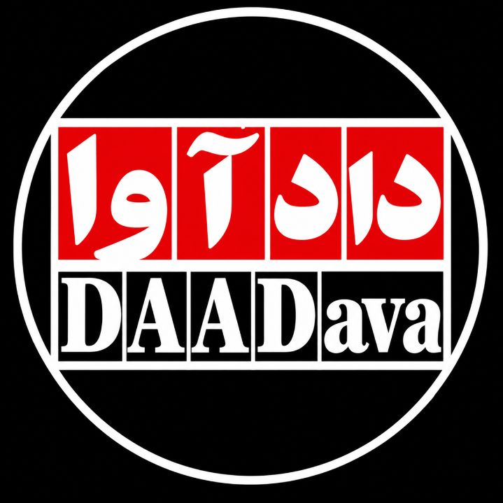

بازگشت میانجیگران قطری به تهران برای توافق با آمریکا
تلاشهای دیپلماتیک برای دستیابی به توافق میان ایران و آمریکا ادامه دارد؛ اما اختلافها بر سر موضوع هستهای و تحریمها همچنان پابرجاست.
۳۰ اکتبر ۲۰۲۶منبع: رویترز ←

خبر، تحلیل و دیدگاه

آینده ایران به تصمیمهای امروز در حوزههای اقتصادی، سیاسی و اجتماعی گره خورده است. در این بخش، مسائل مهم و فرصتهای پیشروی کشور را بررسی میکنیم.
مطالعه کامل خبر ←تلاشهای دیپلماتیک برای دستیابی به توافق میان ایران و آمریکا ادامه دارد؛ اما اختلافها بر سر موضوع هستهای و تحریمها همچنان پابرجاست.
۳۰ اکتبر ۲۰۲۶زلنسکی از تصمیم آمریکا استقبال کرده، اما هشدار داده است که تحویل موشکهای رهگیر ممکن است سالها زمان ببرد.
۳۱ اکتبر ۲۰۲۶انتخابات میاندورهای آمریکا در پیش است و رقابت بر سر کرسیهای مجلس نمایندگان و سنا شدت گرفته است.
۳۱ اکتبر ۲۰۲۶یورونیوز از افزایش نرخ دلار و ادامه فشار بر ارزش پول ملی ایران در پی تحولات اقتصادی و سیاسی خبر داده است.
۳۰ اکتبر ۲۰۲۶اقتصاد فرانسه در سهماهه سوم سال ۰٫۱ درصد کوچک شده و دولت با چالشهای تازهای برای تنظیم بودجه روبهرو است.
۳۰ اکتبر ۲۰۲۶نهاد رقابت بریتانیا بررسی میکند که آیا شرایط تجاری متا حقوق ناشران و کسبوکارهای رسانهای را تحت تأثیر قرار میدهد یا نه.
۳۰ اکتبر ۲۰۲۶بررسی نقش کشورهای میانجی، منافع طرفین و موانع دستیابی به یک توافق پایدار در منطقه.
موضوع پیشنهادی تحلیلیافزایش هزینههای زندگی چگونه بر رفاه اجتماعی، آموزش و آینده اقتصادی خانوادهها تأثیر میگذارد؟
موضوع پیشنهادی یادداشتآسوشیتدپرس از ادعای ایران درباره حمله به یک مرکز راداری آمریکا و اعلام بحرین درباره رهگیری پرتابهها گزارش داده است.
۲۵ آبان ۱۴۰۵ مطالعه کامل خبر ←در پی حمله هوایی اسرائیل در جنوب غزه، ارتش اسرائیل از کشتهشدن فرماندهای از حماس خبر داد و حماس نیز مرگ او را تأیید کرد.
۲۵ آبان ۱۴۰۵ مطالعه کامل خبر ←حوثیهای یمن از آزادی حدود ۶۰۰ بازداشتی خبر دادهاند؛ تحولی که در شرایط ادامه تنشهای منطقهای اهمیت دارد.
۲۵ آبان ۱۴۰۵ مطالعه کامل خبر ←